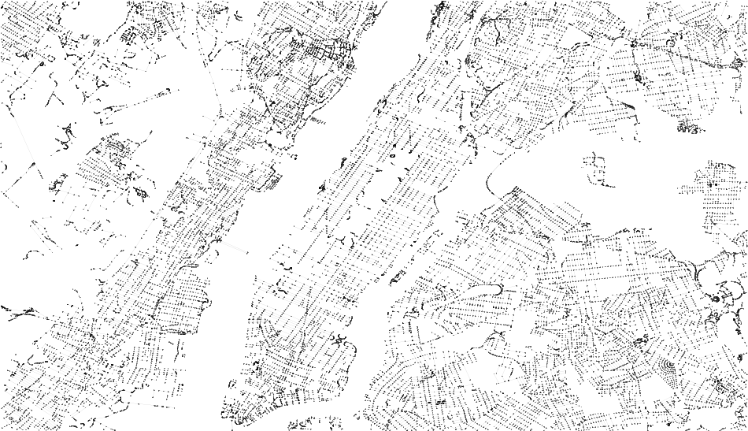
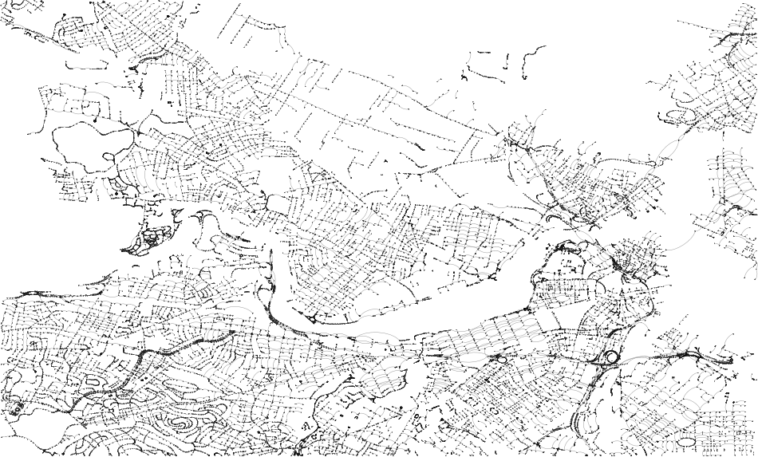
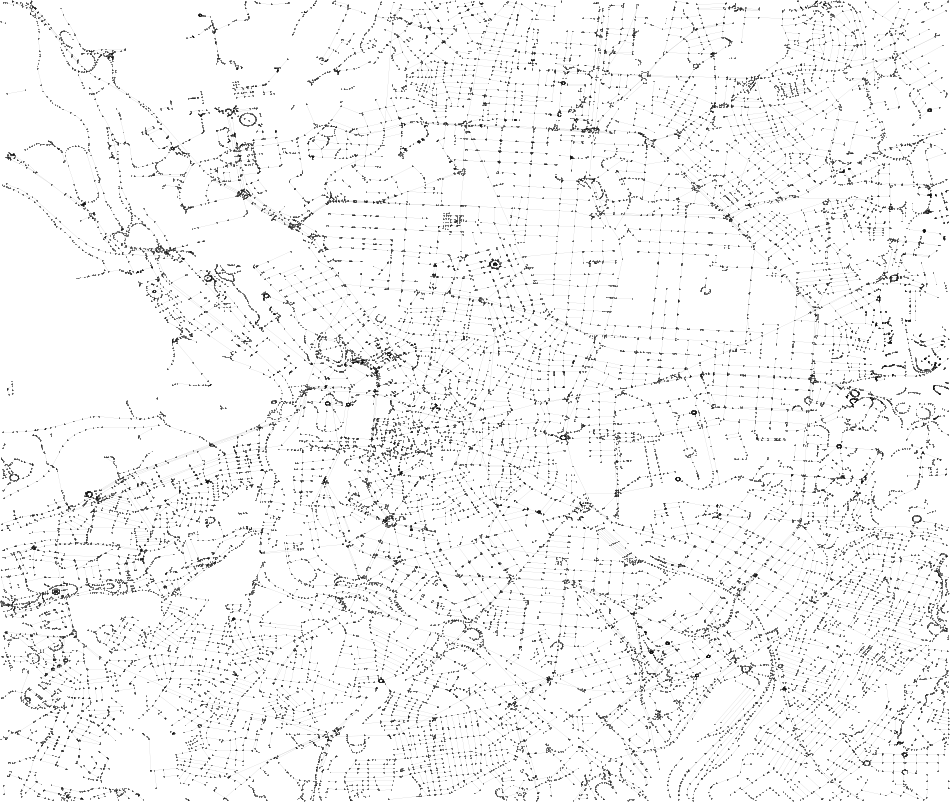

View the Project on GitHub ignacioarnaldo/OpenStreetMap2Graph
| City | Mapzen - OpenStreetMap | Snapshot | Donwload PDF | Donwload gexf file |
| New York City |  | NYC PDF | NYC GEXF | |
| Boston |  | Boston PDF | Boston GEXF | |
| Madrid |  | Madrid PDF | Madrid GEXF |
This project was developed by Ignacio Arnaldo (@ignacioarnaldo)